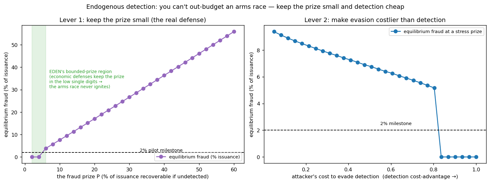

In plain language
Companion to RESULTS - Endogenous Detection. Companion added July 11, 2026 — the v1–v5-era runs predate the plain-language convention; written from the committed RESULTS as it stands today (including any verification-pass corrections already applied in that file), with no reinterpretation.
The question
Earlier adversarial runs treated fraud-detection as a fixed dial we swept by hand. In reality ADAM is what turns that dial — and attackers run ADAMs too. So this run makes detection endogenous: the equilibrium of a contest where defenders spend on catching fraud and attackers spend on evading it, each up to the point where it pays. Where does fraud actually settle?
What we found
The first finding is itself the surprise: you can't out-budget an arms race. In a proportional contest, if defenders spend more, attackers simply scale evasion to match — equilibrium fraud depends on the size of the prize and the cost ratio, not on absolute spending. Two levers actually work. First, keep the prize small — and EDEN does, structurally: the earlier adversarial model showed gaming the mint is unprofitable and sybil floor-farming nets only ~one essentials basket per fake, so the realistic fraud prize sits in the low single digits of issuance. At that level the attacker's optimal evasion spend is zero, equilibrium detection is ~100%, and equilibrium fraud ≈ 0% — the race never even ignites. The prize would have to climb past roughly 6% of issuance before fraud crossed the 2% pilot milestone. Second, if the prize were larger — a stress case at 10% of issuance — fraud drops below 2% once evasion costs roughly 0.8× the value at stake, i.e., once detecting a fake is cheaper than faking past detection. That's an engineering goal for ADAM's immune system, not a budget question. The two models lock together: the bounded payoff is exactly what keeps the arms race cold, so EDEN's fraud resistance doesn't rest on "we'll always have the better AI."
The honest catch
This is a stylized game-theoretic contest. The ~6% ignition threshold and the ~0.8× cost-advantage depend on assumed evasion costs and contest decisiveness — illustrative, not measured; a pilot's red-team is what would calibrate them. And the comfort margin is not huge: the bounded prize (low single digits) sits only a little below the ~6% ignition threshold under these assumptions, which is precisely why both levers matter — keep the prize small and keep detection cost-advantaged; don't rely on either alone. The discovery-manipulation vector is covered separately, and attacker and defender are single aggregate agents here.
One line
EDEN's most important fraud defense isn't a smarter detector — it's that there's little worth stealing: a prize held to a few percent of issuance means the evasion arms race never ignites, and even under a stress-sized prize, making detection cheaper than evasion (about 0.8× the value at stake) holds fraud under the 2% milestone.
Words used here (added July 18, 2026 — plain-language house rule; the text above is unchanged). ADAM — EDEN's AI layer, here wearing its immune-system hat: it runs the fraud detection — and attackers run ADAMs of their own. Endogenous — produced inside the model rather than set by hand: detection strength is now an outcome of the contest, not a dial we swept. Equilibrium — where the back-and-forth settles: the point at which neither side gains by spending another dollar. Proportional contest — a tug-of-war where your odds equal your share of total spending — which is why extra defense budget just invites matching evasion budget. Contest decisiveness — how strongly a spending edge tips the outcome; an assumed dial here. Mint — the creation of new EVE by verified human engagement; "gaming the mint" means faking engagement to create money. Sybil — one person pretending to be many accounts; "sybil floor-farming" is running fake people to collect the safety-net payment. Issuance — all newly created money; the fraud "prize" is measured as a share of it. Red-team — friendly attackers hired to break the system on purpose, so a pilot can measure what real ones could do. Stylized — deliberately simplified; the ~6% and ~0.8× thresholds are illustrative shapes, not measurements.
Figures

Technical results
The adversarial model treated fraud-detection as a fixed dial we swept. ADAM is what actually turns that dial — and attackers run ADAMs too. So this makes detection endogenous: the equilibrium of a contest between defender and attacker agents. Files in this folder.
Setup
Detection isn't a constant; it's the outcome of d(D,A) = D² / (D² + A²) — defender effort D versus attacker evasion A. The attacker invests in evasion up to where it pays: maximize P·(1−d) − cost·A, where P is the fraud prize and cost is the per-unit price of evasion. Equilibrium fraud is P·(1−d*).
The first finding is itself the surprise: you can't out-budget an arms race
In a proportional contest, raw defense budget is not the lever — if defenders spend more, attackers simply scale evasion to match, and equilibrium fraud depends on the prize and the cost ratio, not on absolute spending. Throwing more money at detection, by itself, doesn't win. What wins are two other things.
Lever 1 — keep the prize small (and EDEN does, structurally)
Equilibrium fraud rises with the prize. But at EDEN's prize level the arms race never even ignites: because the earlier adversarial model showed gaming the mint is unprofitable and sybil floor-farming nets only ~one essentials basket per fake, the realistic fraud prize sits in the low single digits of issuance — and at that level the attacker's optimal evasion spend is zero (it isn't worth chasing a small prize), so equilibrium detection is ~100% and equilibrium fraud ≈ 0%. The prize would have to climb past roughly 6% of issuance before equilibrium fraud crosses the 2% pilot milestone. EDEN's economic defenses keep it below that — so the most important "fraud defense" isn't the detector, it's the fact that there's little worth stealing.
Lever 2 — make evasion costlier than detection
If the prize were larger (a stress case), the second lever takes over: a detection cost-advantage. At a 10%-of-issuance stress prize, equilibrium fraud falls as evasion gets more expensive, dropping below the 2% milestone once attacker evasion costs roughly 0.8× the value at stake — i.e., once detecting a fake is cheaper than faking past detection. That's an engineering goal for ADAM's immune system (cheap, scalable anomaly detection + identity) rather than a budget question.
Why this reinforces the rest of the program
The two adversarial models lock together: the bounded payoff established earlier is exactly what keeps the arms race from igniting here. Attackers don't pour resources into evading detection when the most they can win is a couple percent of issuance. So EDEN's fraud resistance doesn't rest on perpetually out-spending an adversary — it rests on a structural property (a small prize) plus an achievable engineering target (a detection cost-advantage). That's a far more durable position than "we'll always have the better AI."
Honest limits
A stylized game-theoretic contest. The exact ignition threshold (~6%) and the required cost-advantage (~0.8×) depend on the assumed evasion cost and contest decisiveness, which are illustrative, not measured — a pilot's red-team is what would calibrate them. Note the comfort margin is not huge: EDEN's bounded prize (~low single digits) sits only a little below the ignition threshold under these assumptions, which is precisely why both levers matter — keep the prize small and keep detection cost-advantaged; don't rely on either alone. The model also abstracts away the discovery-manipulation vector (covered separately) and treats defender/attacker as single aggregate agents. Audience: crypto reviewers thinking about AI-vs-AI fraud dynamics.
Files
endogenous_detection_sim.py— the contest model and the prize / cost-asymmetry sweepsfig_endogenous_detection.png— fraud vs the prize; fraud vs evasion cost at a stress prizeresults_endogenous_detection.json— operating point and thresholds
Raw data